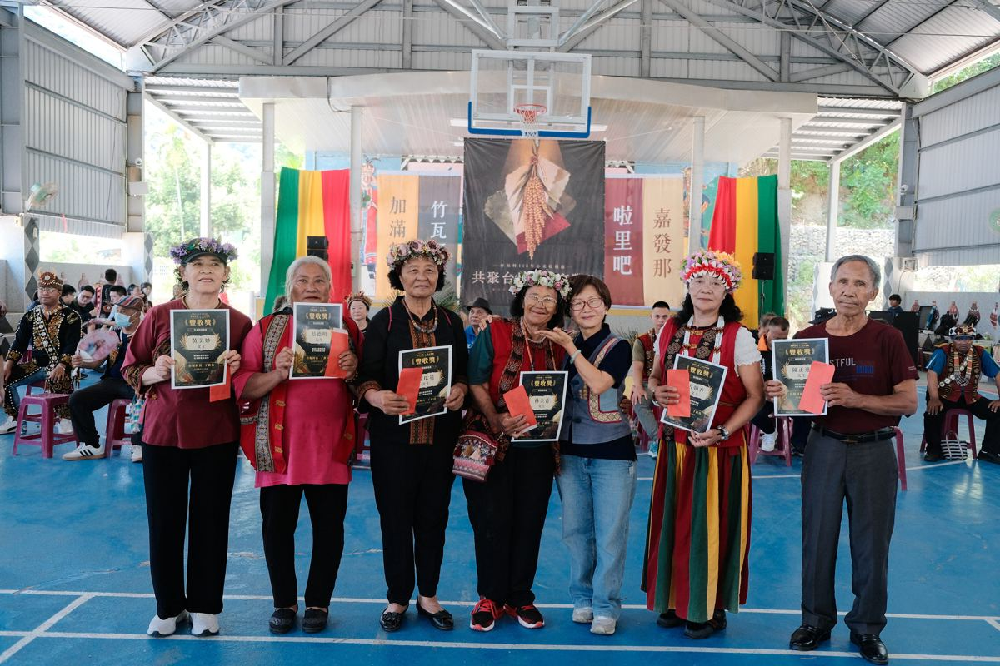
豐收達人獎產業耕作
- 竹瓦阿屋
- 蔡德明、黃美妙
- 所在地
- 伍珠英、林金香
- 啦里吧
- 古朝香、陳正進
各組依序列隊進場，以特色隊呼與熱情歡呼展現團隊精神，現場氣氛熱烈，充分呈現部落凝聚力。
各界長官與貴賓蒞臨，以實際行動支持部落文化傳承與地方活動推展。
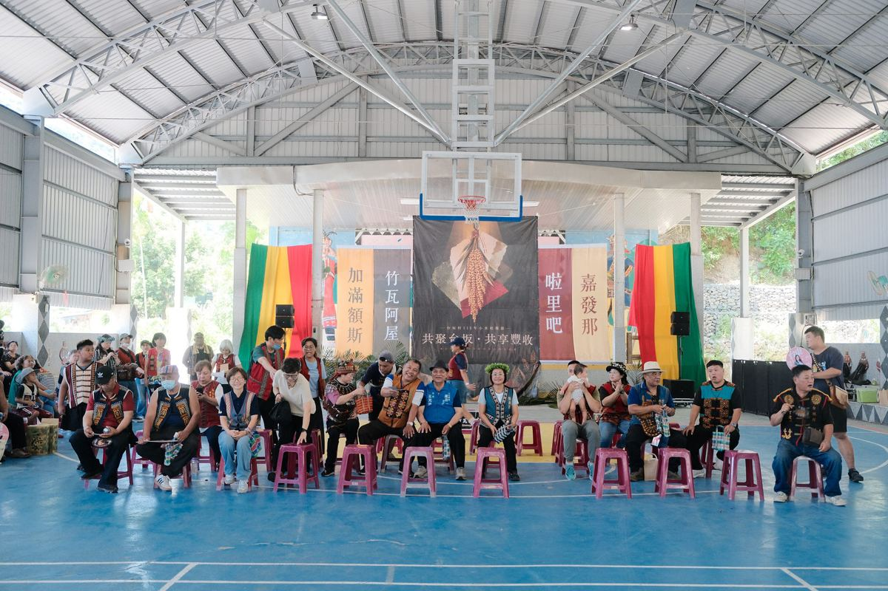
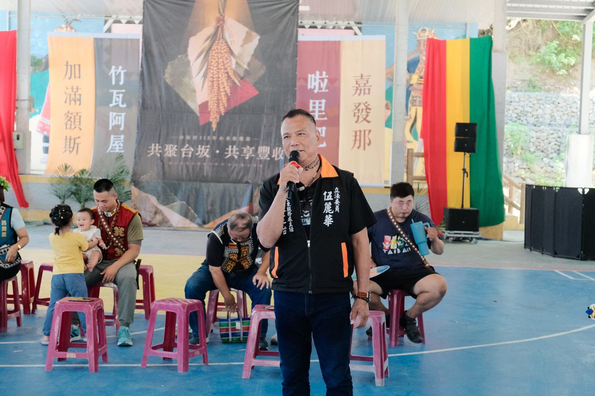
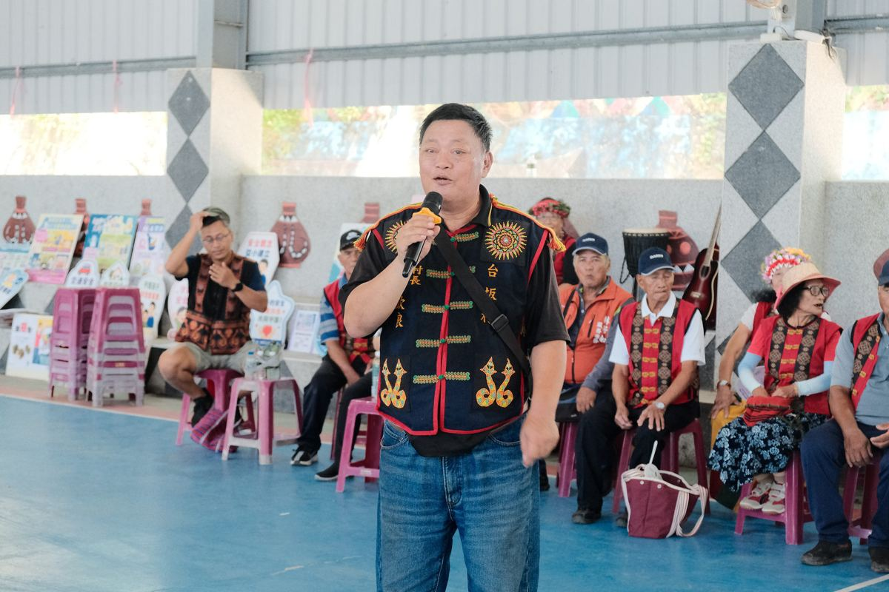
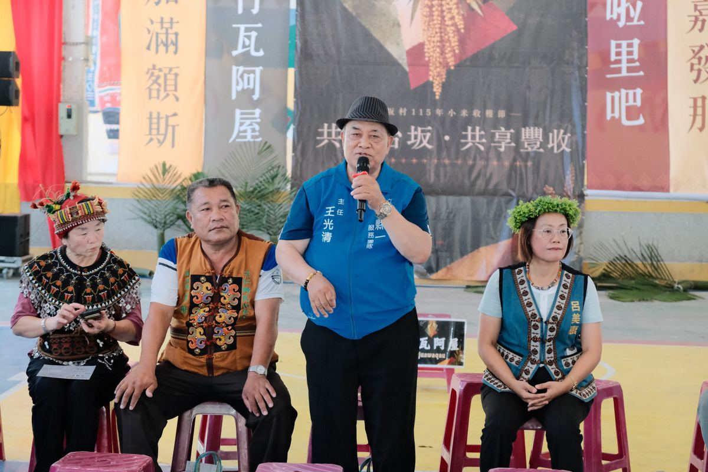
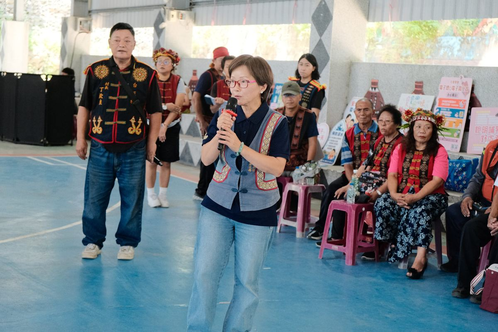
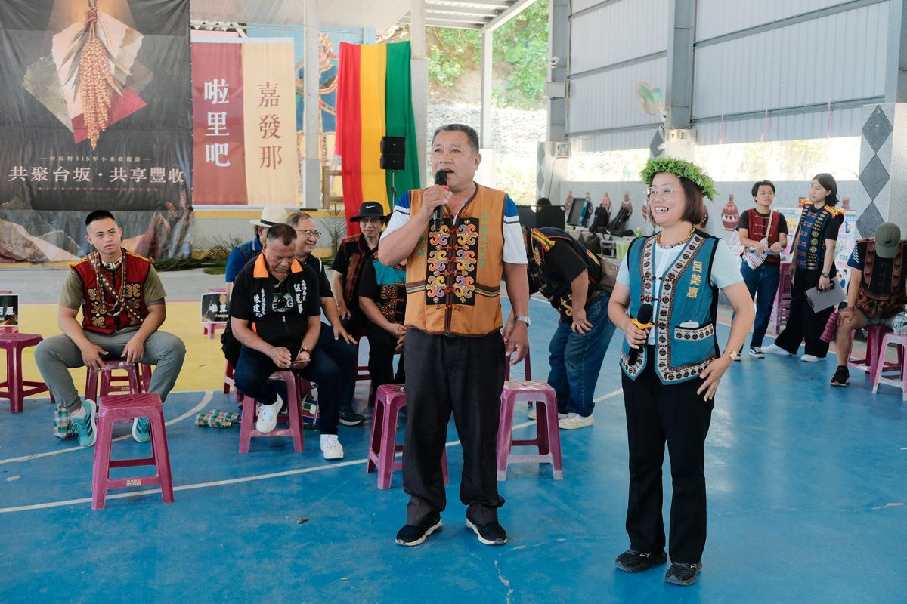
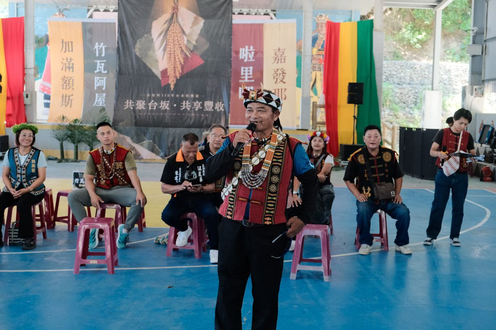
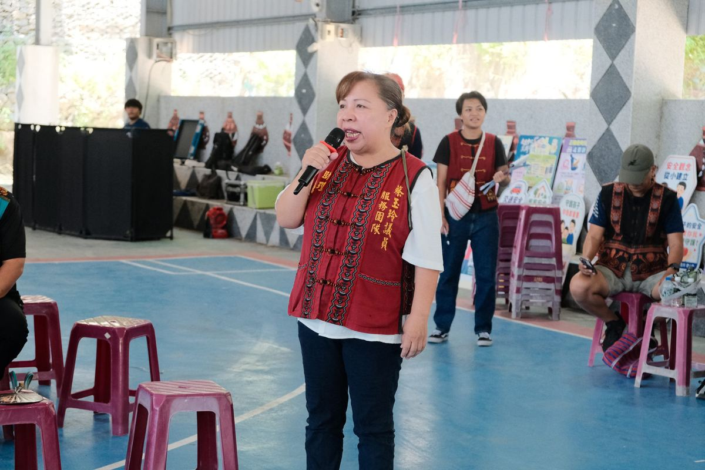
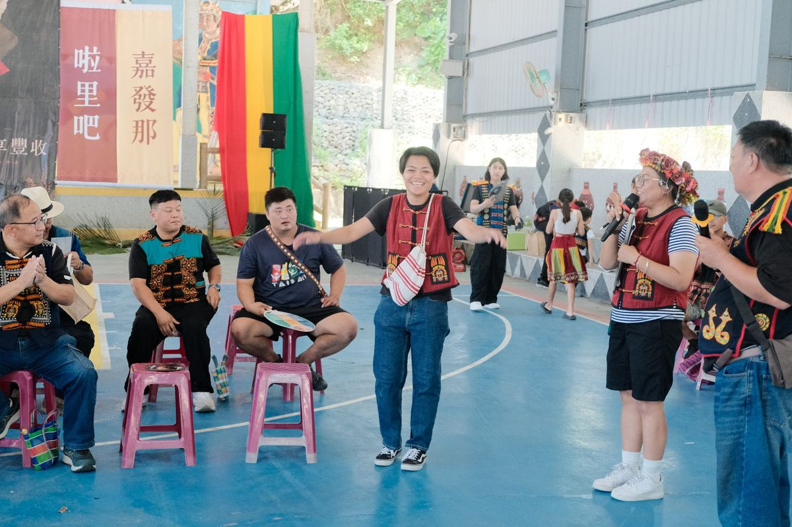
村長丁欽良
致謝來賓臺東縣政府（楊科長代表縣長）、盧縣一委員辦公室 王光清主任、伍麗華委員服務處 陳建台主任、台坂社區發展協會新任理事長 尤奕荃、包嘉鴻村長、蔡玉玲議員、臺東縣政府秘書 張玲芬、台灣電力公司核能後端營運處、達仁鄉鄉長 陳新輝、達仁鄉公所秘書 石振雄、課長 包惠玲、台坂國小校長 蕭德光、安朔村長 邵家年、南迴健康促進關懷協會總幹事 張小雲、立法委員 陳瑩・達仁總召 郭勝珍、台東大學人社中心 陳育嫺教授、賴亮郡教授、土坂社區發展協會理事長 熊大龍、大武衛生所護理長 林芳如。
經各部落推選，共表揚豐收達人、獵人英雄及熱心服務人員，肯定其在產業耕作、狩獵採集與部落服務上的貢獻。

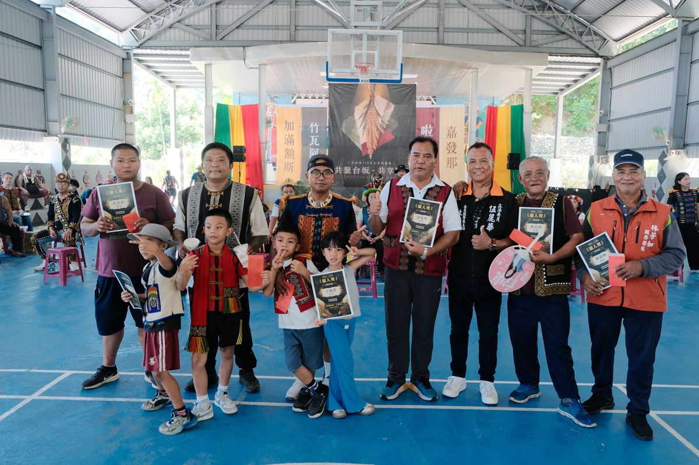
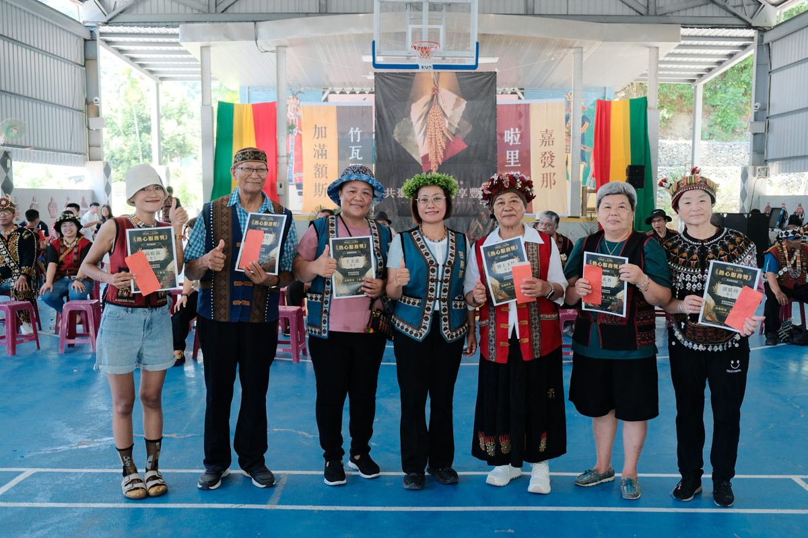
三組隊伍以傳統生活技能展開積分競賽，從手力、擲矛到搗小米，處處是祖先的智慧。
各組派出 3 位男性及 2 位女性，依序上場對戰手力，先取得 3 勝者贏得該場次。裁判：温吉兒、洪浩淵。
各組派出 6 位女性，頭頂 6 斤小米串跑 30 公尺，最快完成接力的隊伍為勝。
各組派出 3 位兒童，頭頂 3 斤小米串跑 10 公尺，最快完成接力的隊伍為勝。
各組派出 5 位兒童，腳套麻袋跳至關卡，回答圖卡的排灣族語名稱，才能跳回原點換下一位接棒。
各組派出 3 男 2 女，將傳統矛擲向 10 公尺外的山豬靶，每人擲 3 次，矛須插在靶上不落地才算分。
各組派出 2 女 1 男 1 青年，8 分鐘內將 5 斤小米去殼，以處理最乾淨且重量較重者為優勝。
各組派出 5 組親子，孩童乘坐檳榔葉鞘、家長拉車競速，最快抵達終點者獲勝。
各組派出 3 男 3 女，進行傳統鋸木競賽。
各組派出 10 人，以竹子與人力模擬早期部落引水的生活智慧，在時限內將藍桶的水引流至 10 公尺外的紅桶，體驗祖先珍惜水源的精神。
評審：丁欽良村長（族語專業、文化傳承領航者）、阮瑋鴻老師（排灣族民族議會青年副議長）、朱正勇老師（FM96.3 主持人）。評選項目為族語自我介紹、才藝表演、部落文化問答。
啦里吧部落
評審評語：整體表現佳、族語表達展現文化力度，服裝準備很用心。
竹瓦阿屋部落
評審評語：自信大方、笑容甜美，展現親善之美，才藝肢體大方。
加滿額斯部落
評審評語：有大將之風，歌聲與肢體語言很棒。
竹瓦阿屋部落
評審評語：年紀最輕的參賽者，有點羞澀、歌聲甜美，期待多一點自信；服裝準備用心。